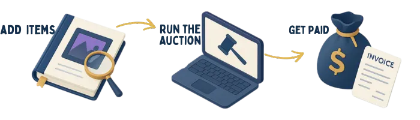

All-in-One Auction Management Software Features
Discover the comprehensive set of tools and features that make Circuit Auction the leading platform for auction houses. From AI-powered catalog creation to seamless bidding experiences, we've built everything you need to run successful auctions.
All-in-One Auction Management
Transform your auction house with a single platform that seamlessly handles everything from consignment intake to final delivery. Stop juggling multiple systems for catalogs, bidding, and accounting – Circuit Auction brings your entire operation under one roof, giving you more time to source valuable collections and build relationships with your top bidders.
AI-Powered Catalog Creation
Turn rough notes into polished catalog descriptions in minutes. Our intelligent assistant helps value items based on recent market results, suggests appropriate categories, and maintains your house style across all listings. Create professional catalogs for numismatic, philatelic, or fine art auctions in a fraction of the time.
Customizable Platform
Present your auctions with the distinguished look and feel your establishment deserves. Your platform appears completely custom-built under your own domain, featuring your branding throughout. Collectors will experience your unique auction environment rather than a generic third-party platform, strengthening your reputation in the collectibles market.
Multi-Language Support
Expand your bidder pool internationally with interfaces that speak your clients' languages. Staff can work in English while European bidders browse in French or German, and Asian collectors participate in Chinese or Japanese. Break down barriers that limit participation in specialized collectibles markets where serious buyers exist worldwide.
Revision Control System
Track every change made to important lot descriptions with a complete history that preserves previous versions. Know exactly who updated reserve prices or condition reports and when these changes occurred. Essential for maintaining provenance records and ensuring accountability when handling high-value collectibles.
Robust Image Handling
Upload hundreds of coin, stamp, or artwork images at once and let the system automatically match them to the right lots. High-resolution images load quickly for bidders while secure cloud storage ensures your valuable catalog imagery remains safely archived for future reference and market comparisons.
Comprehensive CRM System
Build stronger relationships with collectors by tracking their specialized interests, bidding history, and communication preferences. Instantly see which clients focus on pre-1900 stamps, Renaissance paintings, or ancient coins so you can alert them to upcoming lots. This personalized service drives higher engagement and stronger hammer prices.
Lot Numbering & Organization
Implement flexible numbering systems that respect your auction house's traditions while accommodating special collections. Whether you organize by time period, artist, or specialized categories, maintain consistent cataloging while easily adapting to themed sales or estate collections.
Barcode Reader Integration
Process estate buyouts and large consignments effortlessly by scanning items directly into inventory. Track valuable pieces throughout your warehouse from intake to photography to auction block, eliminating misplaced items and providing consignors with confidence in your handling procedures.
Custom Workflows Configuration
Preserve your auction house's unique approach rather than conforming to generic software. Whether your specialty is manuscript authentication, numismatic grading, or provenance research, define approval processes that maintain your exacting standards while eliminating redundant steps.
Bulk Item Updates & Batch Actions
Save countless hours when preparing auctions by updating multiple lots simultaneously. Adjust reserves across an entire collection, apply condition grades to a series of similar coins, or reschedule multiple lots with a few clicks instead of tedious item-by-item editing.

Consignment Management
Build consignor confidence with professional management of their valuable collections from initial valuation through final settlement. Generate consignment agreements automatically with terms tailored to collection value and consignor status, providing real-time updates that demonstrate your professional handling.
Authentication Support
Document provenance, certificates, and expert opinions with integrated tools that strengthen bidder confidence in high-value items. Generate detailed authentication reports for inclusion in catalog listings, building your auction house's reputation for thorough verification and integrity.
Live & Pre-Auction Bidding
Create exciting auction events with seamless bidding that transitions from advance bids to dynamic live sales. Let collectors participate via your website, mobile devices, or in your auction room with perfect synchronization across all channels, driving competitive bidding and higher realizations.
Phone Bidder Card System
Provide white-glove service to important collectors who prefer phone bidding with elegant digital cards displaying essential client information and bidding instructions. Track multiple phone representatives simultaneously with color-coded status indicators showing which lines are connected and active during fast-paced auctions.
Bidding Limits Management
Protect consignors and your reputation with sophisticated bidding limits based on collector history and verification. Set appropriate thresholds for new bidders while allowing established clients greater flexibility, ensuring responsible participation while minimizing post-auction complications.
External Bids Import
Accommodate traditional collectors by easily importing bids received by mail, email, or phone into your central system. Consolidate all bidding activity regardless of origin, ensuring long-standing clients who prefer conventional bidding methods remain valued participants in your digital auctions.
Bidding History Analytics
Discover which collecting specialties generate the most competitive bidding and which marketing channels attract the most active participants. Make informed decisions about future consignments and promotional strategies based on actual bidding patterns across different collecting categories.
Currency Conversion
Expand your international collector base by displaying values in multiple currencies simultaneously. Generate invoices in the buyer's local currency while maintaining your accounting in your primary currency, eliminating confusion for overseas bidders and encouraging global participation.
Bidder Watchlists & Automated Alerts
Keep collectors engaged with personalized watchlists for items matching their collecting interests. The system automatically notifies bidders when they've been outbid, when favorite lots are approaching, or when auctions are about to begin, driving active participation and competitive bidding throughout your sales.
Multi-Channel Sales Integration
Maximize exposure by publishing your catalog simultaneously across multiple collecting platforms while managing everything from your Circuit Auction dashboard. List once and reach serious collectors wherever they prefer to browse, significantly increasing visibility without duplicating effort.
Complete Invoicing Solution
Generate professional invoices automatically as auctions close, including all relevant premiums, taxes, and shipping costs. Send consolidated billing to buyers who acquired multiple lots, enhancing your professional image while accelerating payment collection.
Credit Card Processing
Streamline post-auction payments with secure credit card processing that stores payment methods for repeat buyers. Offer the convenience sophisticated collectors expect while reducing the gap between hammer fall and funds received.
Shipping Integration
Simplify fulfillment of delicate collectibles with shipping label generation based on item details and buyer information. Calculate appropriate insurance and handling costs automatically based on realized prices and destination, ensuring precious items arrive safely while saving hours on logistics.
Transaction Tracking
Monitor all financial activities in real-time with dashboards showing pending payments, completed settlements, and outstanding balances. Send automated reminders for delayed payments without administrative intervention, improving cash flow while maintaining courteous client relationships.
Commission Management
Accommodate complex consignor arrangements with flexible commission structures that can vary by collection value, seller history, or special agreements. Calculate tiered rates automatically based on hammer prices, ensuring accurate settlements for every consignment type.
Finder Fee Management
Strengthen your network of dealers and appraisers by professionally tracking and paying referral fees. Set different reward structures based on the quality and value of consignments or buyer introductions, encouraging valuable connections that bring exceptional material to your auction house.
Accounting Integration
Eliminate redundant data entry by synchronizing auction results with your accounting software. Export transaction data in formats compatible with industry-standard financial systems, maintaining immaculate records while dramatically reducing bookkeeping time.
Mailing List Management
Build targeted marketing campaigns with tools for segmenting collectors based on their specialized interests, bidding patterns, and geographic location. Track engagement to refine your approach and increase participation through personalized communications highlighting relevant upcoming lots.
Consignor Documentation
Generate comprehensive pre-sale agreements and detailed post-auction performance reports with a few clicks. Show consignors exactly how their collections performed, including bidding activity and comparison to estimates, building confidence that leads to future consignments.
Automated Email Marketing
Maintain consistent communication through scheduled campaigns announcing upcoming auctions or featuring highlighted lots. Create automated sequences for new bidder onboarding, consignment requests, or follow-ups that work while you focus on sourcing important collections.
SEO-Optimized Listings
Attract serious collectors with catalog listings structured for maximum visibility in search engines. Automatically include appropriate keywords and metadata that help specialists find your auctions without requiring technical expertise from your catalogers.
Advanced Security Tools
Protect high-value transactions with enterprise-grade security including bidder verification systems and fraud prevention tools. Meet the expectations of serious collectors and consignors by providing a secure environment that inspires confidence when dealing with valuable material.
GDPR Compliance & Data Protection
Navigate international privacy regulations with built-in tools that manage consent, data access requests, and information protection. Give European collectors confidence that their personal information is properly secured according to strict regulations, expanding your market while avoiding compliance issues.
Task Management System
Eliminate miscommunications and oversights with integrated workflow tools that assign responsibilities and track completion across your team. Ensure smooth progression from initial appraisal to final delivery with clear deadlines and dependencies for every auction.
Advanced Analytics
Transform your auction strategy with insights revealing key performance metrics across categories, time periods, and price points. Identify trends in collector behavior and market valuation that would otherwise remain hidden, helping you focus on the most promising collecting areas.
Mobile-Friendly Interface
Run your auction house from anywhere with responsive interfaces that work seamlessly across all devices. Process consignments during estate visits, update listings during industry events, or monitor live auctions while away from your desk, with all the power of the full platform.
How it Works?
With Circuit, every step is streamlined, from item entry to final payment.
